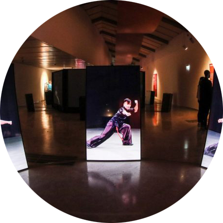

Yumeng Hou
DH Researcher | Data Scientist | Digital Strategist

Publications
See a complete list on Google Scholar
Journal Articles
- Hou, Y.*, Seydou F.M., Kenderdine S. (2023). "Unlocking a multimodal archive of Southern Chinese martial arts through embodied cues". Journal of Documentation. Vol.Ahead-of-print. https://doi.org/10.1108/JD-01-2022-0027
- Hou, Y.*, Kenderdine S., et al. (2022). "Digitizing Intangible Cultural Heritage Embodied: state of the art". Journal on Computing and Cultural Heritage. https://doi.org/10.1145/3494837
- Hou, Y.* (2021). "Accessing, Representing, and Transmitting Cultural Heritage through Digital Archives: Challenges and Opportunities". Digital Humanities Research, 4(1), 77-91. http://dhr.ruc.edu.cn/CN/Y2021/V1/I4/77
- Adamou, A., Picca, D., Hou, Y., & Granados-García, P. L. "The Facets of Intangible Heritage in Southern Chinese Martial Arts: Applying a Knowledge-Driven Cultural Contact Detection Approach". Journal on Computing and Cultural Heritage. Just accepted.
- Xia, J., Hou, Y., Chen, Y. V., Qian, Z. C., Ebert, D. S., & Chen, W.* (2017). "Visualizing rank time series of Wikipedia top-viewed pages". IEEE computer graphics and applications, 37(2), 42-53. https://doi.org/10.1109/MCG.2017.21
Peer-reviewed Conference Proceedings
- Hou, Y. (2023). “Co-encoding embodied knowledge in Southern Chinese martial arts: a collaboration between computists, experts, and digital models”. Digital Humanities 2023: Book of Abstracts. Long paper presentation at DH2023: Collaboration as Opportunity. July 10-14 2023, Graz, Austria. Paul Fortier Prize (best paper) candidate.
- Hou, Y.*, Kenderdine S. (2022). Encoding the Whole-of-Environment Knowledge for Intangible Cultural Heritage: A Computational Experiment with the Hong Kong Martial Arts Living Archive. In (IN)TANGIBLE HERITAGE(S): Design, culture and technology – past, present, and future, June 15-17, Canterbury, UK. AMPS Proceedings Series 29.1, pp.121-132. [PDF]
- Hou, Y.* (2022). Augmenting knowledge exploration using agent-based models: A computational experiment with the Hong Kong Martial Arts Living Archive. 7th International Martial Arts Studies Conference. June 29 - July 2 2022, Lausanne, Switzerland. [Abstract]
- Adamou, A.* , Hou, Y.*, Picca, D.*, et al. (2021). Ontology-mediated cultural contact in Southern Chinese martial arts. In Proceedings of the International Joint Workshop on Semantic Web and Ontology Design for Cultural Heritage. [PDF]
- Picca, D.*, Adamou, A.*, Hou, Y. et al. (2022). Knowledge organization of the Hong Kong Martial Arts Living Archive to capture and preserve intangible cultural heritage. In DIGITAL HUMANITIES 2022, July 25-29, Tokyo. Book of Abstracts of DH2022, pp.329-331. [PDF]
- Xia, J., Chen, W.*, Hou, Y., et al. (2016). Dimscanner: A relation-based visual exploration approach towards data dimension inspection. In 2016 IEEE Conference on Visual Analytics Science and Technology (VAST) (pp. 81-90). IEEE. https://doi.org/10.1109/VAST.2016.7883514
Book Chapter
- Kenderdine, S.*, Hibberd, L., Shaw, J., Chang, T.-Z., & Hou, Y. (2023). Archery Rites: Re-making Confucian Rites. Chinese Archery Studies: Theoretical and Historical Approaches to a Martial Discipline. Springer. https://doi.org/10.1007/978-981-16-8321-3_13
Research Projects

Hong Kong Martial Arts Living Archive (HKMALA)
The HKMALA dataset currently represents the world’s largest motion archive for intangible cultural heritage, comprising unstructured data including mocap, 3D reconstructions, green screen video, high speed and panoramic video, and comprehensive photographic archive of all kung fu masters involved.
CROSSINGS: Computational Interoperability For Intangible and Tangible Cultural Heritage
CROSSINGS aims to develop an ontological model of intangible heritage combining aspects of haptics, pose and motion with meaningful traits of traditions and folklore, ultimately enabling a framework for cultural data interoperation, incorporating tangible and intangible heritage alike.
嶺南武術之數碼藝術及教育試驗計劃
Taking into account the deep cultural connection between Chinese Martial Arts (“CMA”) and other types of performing arts, “Transforming Lingnan Martial Arts as a Movement and Performing Art through Digital Pedagogy, Interpretation and Performance” represents the first systematic attempt to develop a scientific movement programme that can be adapted to performing arts education and training.